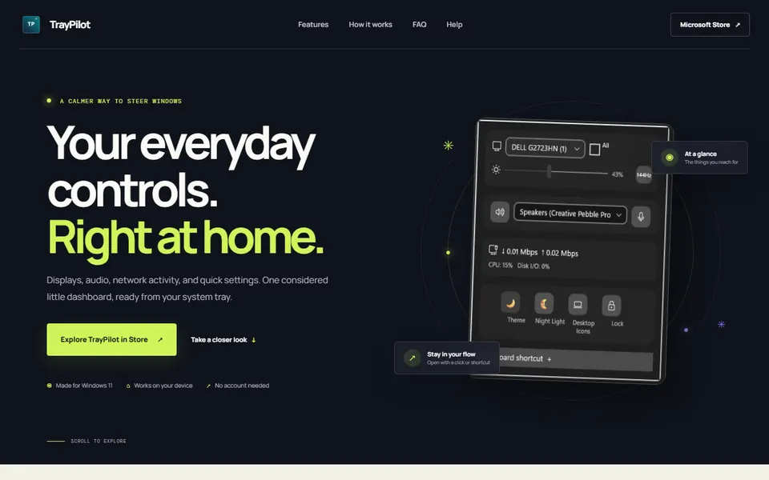
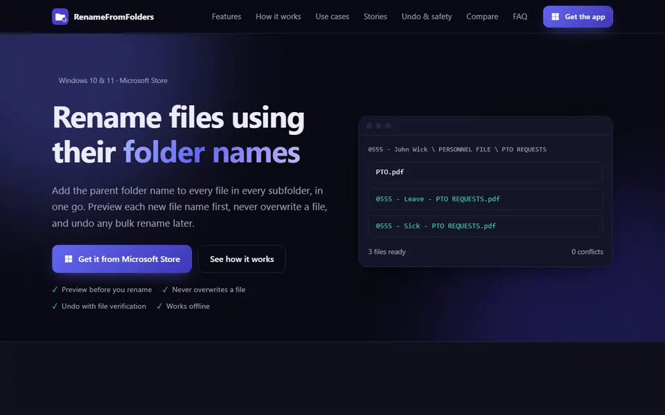
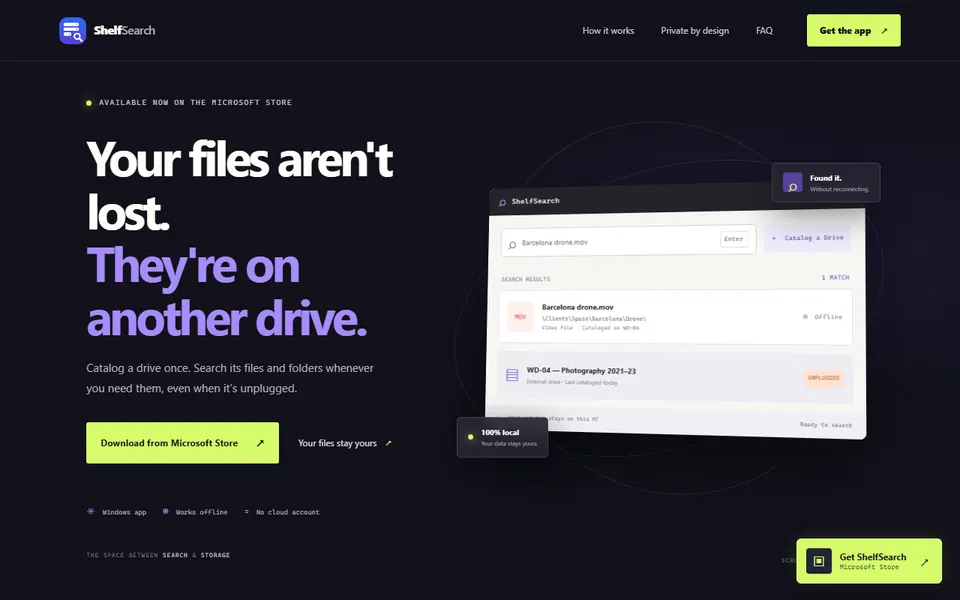
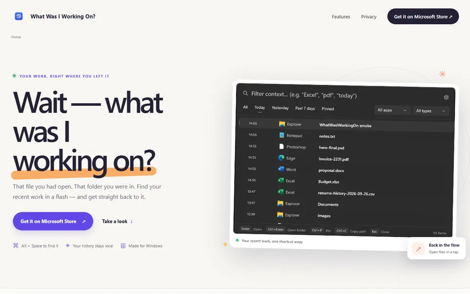
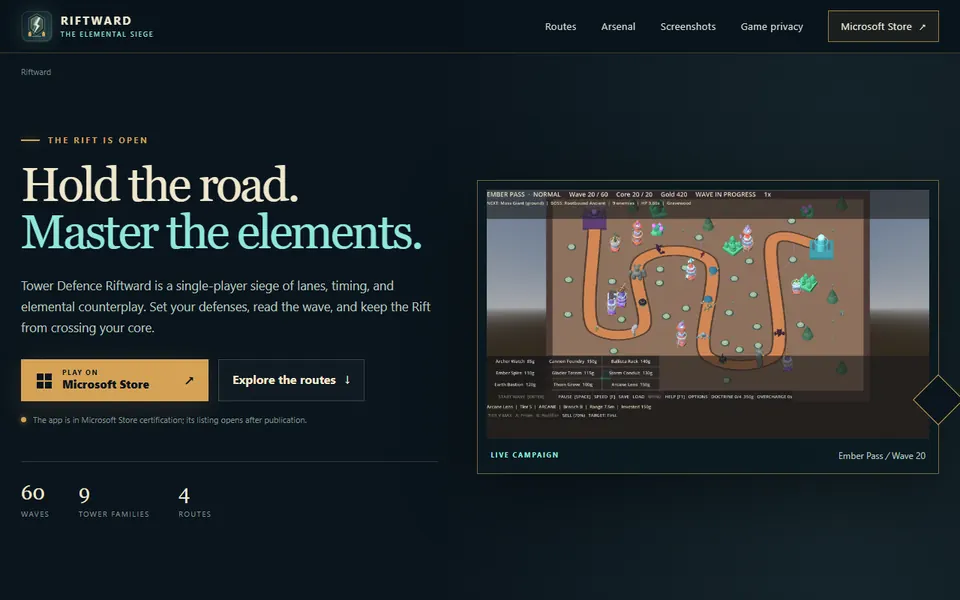

Solo developer · Windows 11 · Open to ideas
I build small, useful Windows apps and the tools around them.
Desktop utilities, product sites, guides and the occasional game. Everything below is live, and most of it is free to try.
- 11projects
- 9live sites
- 8Windows apps
The apps built by Nikatsam require: NO tracking, NO accounts and work OFFLINE.
Why it matters →
About
One developer, a lot of small projects
I'm a solo developer making Windows tools and games for fun. Some of them bring in a little side income, which pays for the next project.
I write the code, the guides and the store listings myself. If something here is useful to you, that's the best feedback there is.
- W Windows desktop tools that solve one annoying problem well.
- G Small games, built for the fun of it.
- ♦ Websites, guides and privacy pages for each release.
Projects
Pick one and take a look
Each card links to a live site or the source repo. Filter by type below.

Windows app
Live
TrayPilot
Monitor brightness, audio switching and network stats, one click from the tray.

Windows app
Live
ClerkBrain
Local AI that sorts receipts and invoices in your Downloads folder, without uploads.

Windows app
Coming to Store
Craft Fair Profit
Offline planning for craft fairs: stock, costs, takings and break-even at a glance.

Windows app
Live
Fix My Photo Library
Confirm your photo backups, clear duplicates and check image health, all on your PC.

Windows app
Live
Fix My Photo Dates
Repair photo timestamps lost during Takeout exports, cloud downloads or file moves.

Windows app
Live
RenameFromFolder
Name files after the folders they sit in, with a preview before anything changes.

Windows app
Live
ShelfSearch
Search your external drives and network shares, even while they're unplugged.

Windows app
Live
What Was I Working On?
Get back to the file you had open yesterday, found in seconds from a single shortcut.

Game
Live
Tower Defence Riftward
A tower defence campaign of elemental sieges across four routes and sixty waves.

Game
Live
Blobheads Voleyball Arcade
A reimagined arcade volleyball game for Windows, played against the computer or a friend.

Game
Live
Puzzlotski Puzzle
A reimagined sliding-block puzzle with its own original levels, on the Microsoft Store.
No projects in this filter yet.